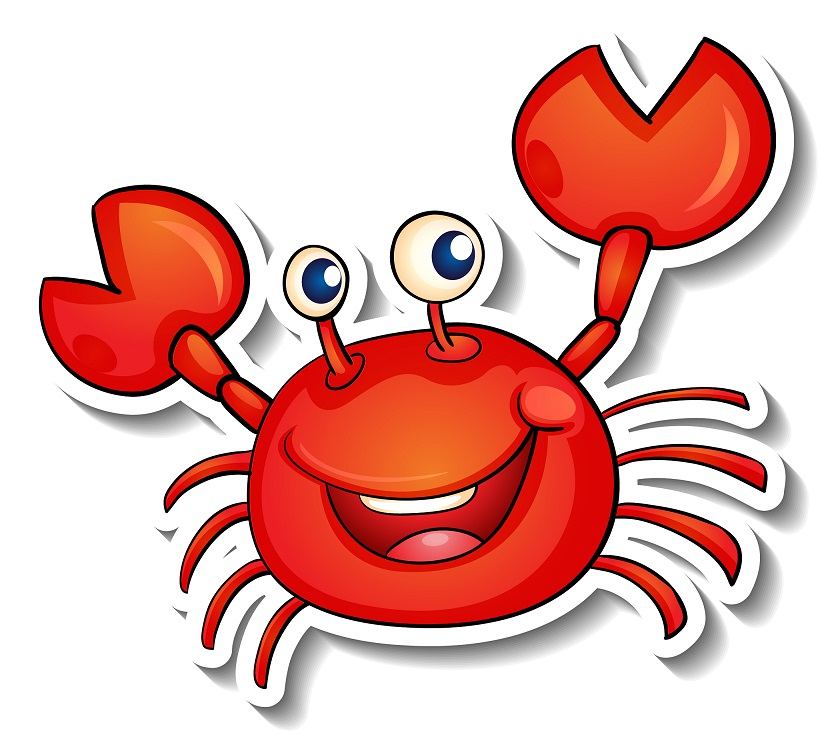

Páginas con imagenes
1.- Imagen del cangrejo

3.- Imagen pelota

Etiquetas y atributos utilizados
-
<img>: Etiqueta principal para insertar imágenes en HTML.
-
src: Atributo que especifica la ruta de la imagen (puede ser relativa o absoluta).
-
alt: Atributo que proporciona un texto alternativo para la imagen, importante para
accesibilidad.
-
width y height: Atributos que especifican las dimensiones de la
imagen.
-
<a>: Etiqueta para crear enlaces.
-
href: Atributo que especifica la URL de destino del enlace.
-
target="_blank": Atributo que hace que el enlace se abra en una nueva pestaña.
-
rel="noopener noreferrer": es una combinación de dos atributos HTML que se añaden a
enlaces externos para
mejorar la seguridad y privacidad. noopener evita que la nueva ventana o pestaña tenga acceso a la
página
original, y noreferrer impide que el sitio de destino pueda saber de dónde vino el tráfico